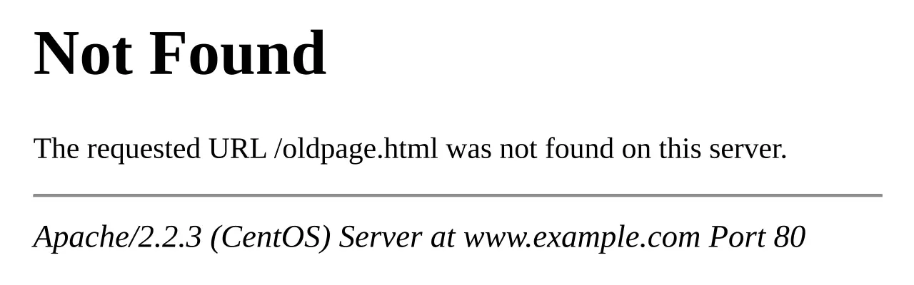

短答
链接腐烂是目标曾经存在、现在返回错误或软性空页面的链接。
内部腐烂是 SEO 健康缺陷，因为这条路径曾是发现的一部分。外部腐烂在你引用的来源消失时是信任缺陷。未找到图片是跟着链接走之后人看到的结果。状态码是爬虫记录的东西。两者都属于记录，再加上仍然包含该锚点的来源 URL。
定义
落到正确替代品上的重定向不是腐烂。重定向到首页是更软的腐烂：点击还在，意图没有了。孤立页是相反的形态：文档存在，没有东西链向它。不要把两种发现合成一个计数。本文不会编造计数。
链接是路径，不是分数
找出目标报错的内部锚点，并改指向、重定向到真正的替代品，或去掉锚点。
只检查 sitemap 会漏掉从未被列出的 URL 的链接。从首页和关键枢纽出发的抓取才能找到锚点。记录来源、锚文本、目标和状态。修复后的再审计应该显示该来源不再指向死去的目标。

要检查什么
- 返回 404、410 或软 404 的内部目标
- 在存在真正替代品时使用的首页重定向
- 来源 URL、锚文本、目标和状态记在一起
- 孤立页作为单独的发现
- 对来源页的再审计
一个结构示例
三篇应用说明链到 /media/old-torque-chart.pdf，它返回 404。图表现在位于新路径。修复是更新三个锚点，并为收藏了旧地址的人从旧 PDF URL 做重定向。留下锚点只做重定向也可以，但更新锚点让路径少一跳。
它不声称什么
修复失效链接不保证排名或引用。
Mika Visibility 把它归到哪里
Mika Visibility 把内链当作 SEO 健康里的发现路径。孤立页没有内链。失效链接浪费这条路径。两种发现都不是名次，也不是 GEO 分数。描述性锚文本帮助人和爬虫区分页面。它们不制造权威数字。
未找到图是死去目标的人的一面。状态码是发现的另一半。
常见问题
什么是链接腐烂？
链接腐烂是目标曾经存在、现在返回错误或软性空页面的链接。
修复应该做什么？
找出目标报错的内部锚点，并改指向、重定向到真正的替代品，或去掉锚点。
修复链接能保证排名吗？
修复失效链接不保证排名或引用。
下一步
做一次结构化的 SEO + GEO 审计，查看健康发现、增长缺口和可以执行的蓝图。
更清晰的实体、答案、证据和上下文，会让页面更容易被理解与引用。任何回答产品中的结果都不作保证。